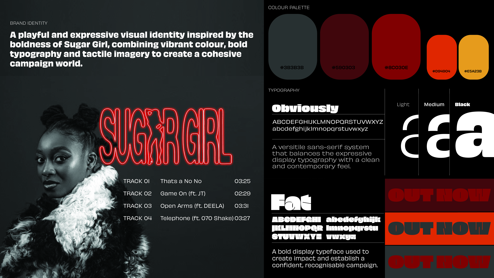
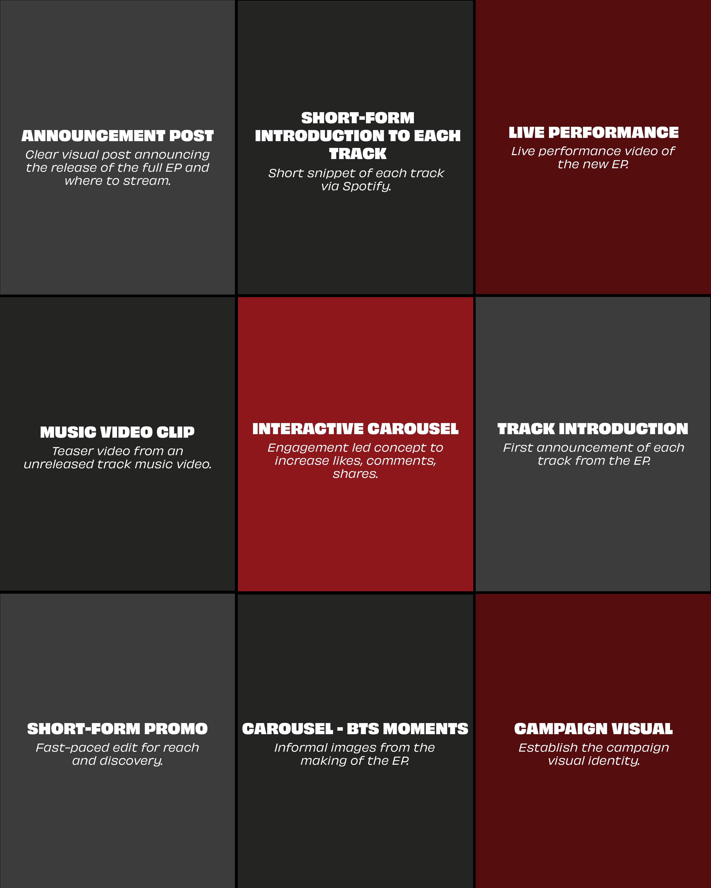
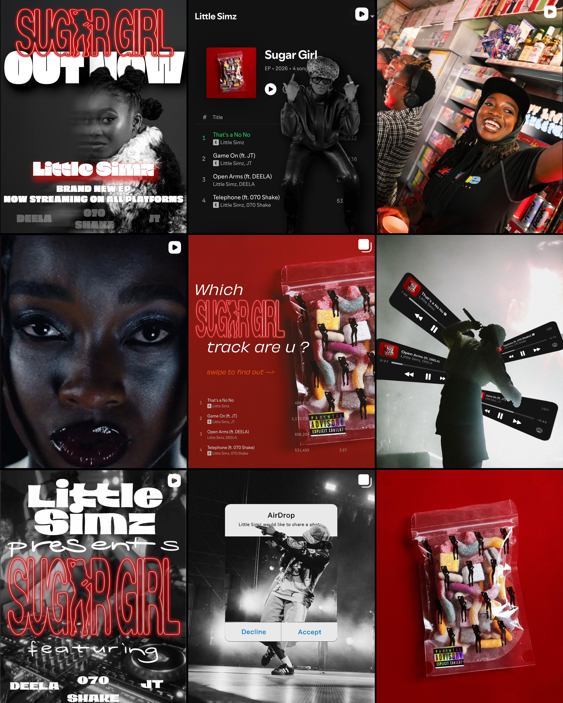
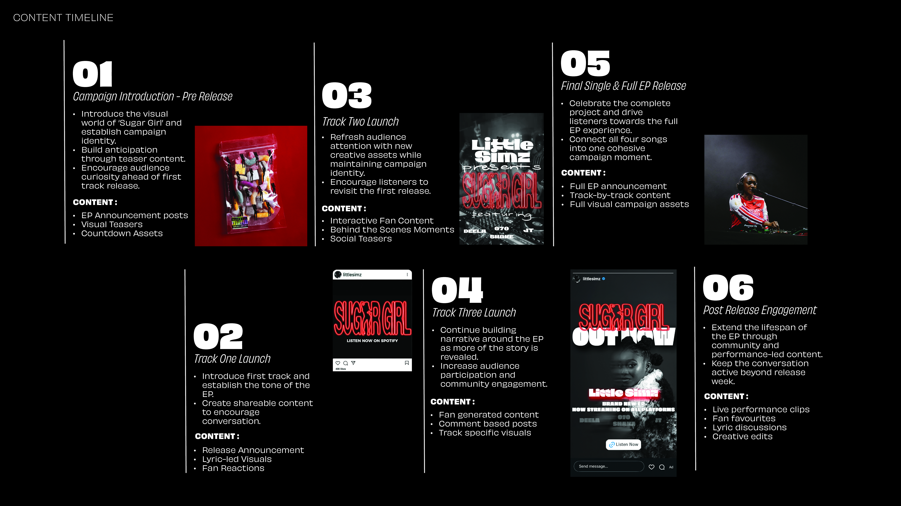
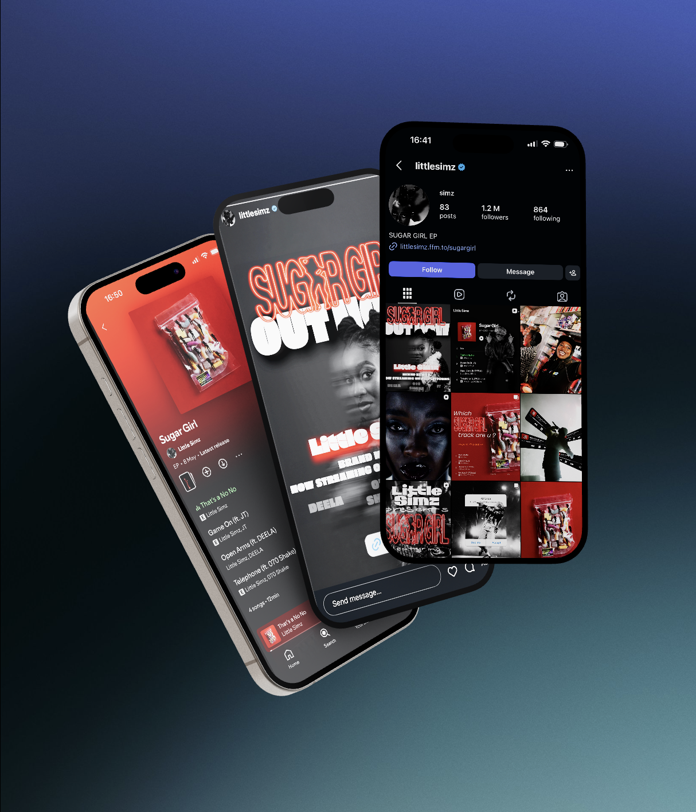

Digital campaign concept for ‘Sugar Girl’ EP
Creative marketing proposal developed in response to a live recruitment brief.
Sugar Girl is a digital campaign concept created in response to a creative marketing brief for Little Simz's EP release. The project explores how social-first content, platform trends, and audience engagement can be combined to create a campaign that feels authentic to both the artist and her audience.

Project brief
Develop a digital marketing campaign for Little Simz's Sugar Girl EP, creating engaging content that builds anticipation, encourages audience interaction and extends the life of the project across social platforms.
Instagram feed mockup
A series of social-first posts designed to build a consistent visual world around the Sugar Girl release. The feed combines promotional messaging, artist imagery and platform-native content to create a balance between campaign communication and audience engagement.


Instagram feed mockup
Short-form content
For TikTok, I developed two short-form concepts to build excitement around the EP. One uses bold typography, fast-paced editing and beat-synchronised cuts, while the other recreates the Spotify interface to preview each track and encourage viewers to continue listening.
These concepts form part of a wider campaign ecosystem, using different content formats to move audiences from awareness and engagement towards discovery and streaming.

Platform strategy
TikTok + Instagram Reels
Short-form video content designed for discovery, retention and repeat viewing.
Interactive carousels and static assets designed to encourage saves, shares and conversation.
YouTube Shorts
Music-led short-form content that extends the campaign beyond Instagram and TikTok.
Paid social
Selected assets adapted for targeted Meta advertising to reach new audiences and drive streams.
